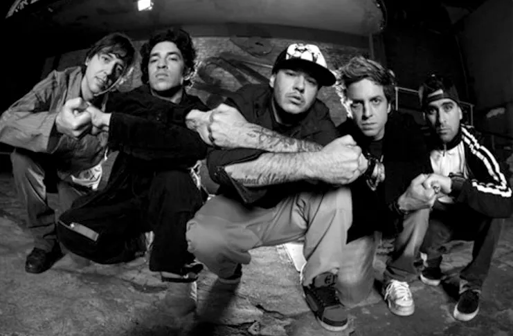

Essa foto foi usada para divugar os 50 anos em sua homenagem
Informação da banda charlie Brown Jr.
- Charlie Brown Jr. foi uma banda de rock brasileira formada em 1992 na cidade de Santos.
- Esse são os criadores Chorão (vocal), Champignon (baixo), Marcão (guitarra), Thiago Castanho (guitarra) e Renato Pelado (bateria).
- A banda tem dez álbuns de estúdio lançados, três álbuns ao vivo e sete DVDs.
- Todos os membros da banda são naturais de Santos
- No dia 6 de março de 2013, Chorão foi encontrado morto em seu apartamento, localizado na cidade de São Paulo.
- Sua morte foi causada por conta de uma overdose de cocaína
- Alexandre Magno Abrão, mais conhecido pelo seu nome artístico Chorão, foi um cantor, compositor, skatista, cineasta, roteirista e empresário brasileiro
- Em 2019 foi lançado um documentario sobre a historia do Chorão, Nome do documentario Chorão: Marginal Alado
- Em 2021 os fãs do Charlie Brown Jr têm acompanhado com muita felicidade e ansiedade as boas notícias que vêm surgindo nas redes sociais da banda.